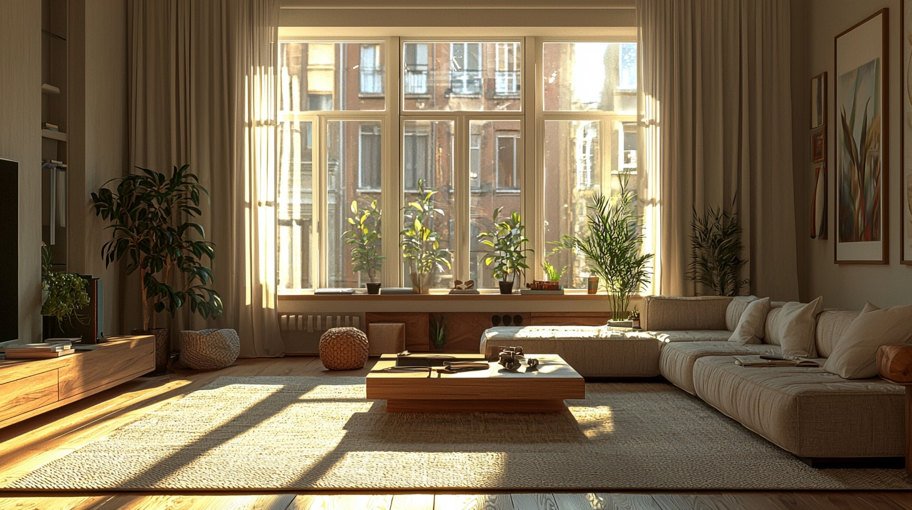
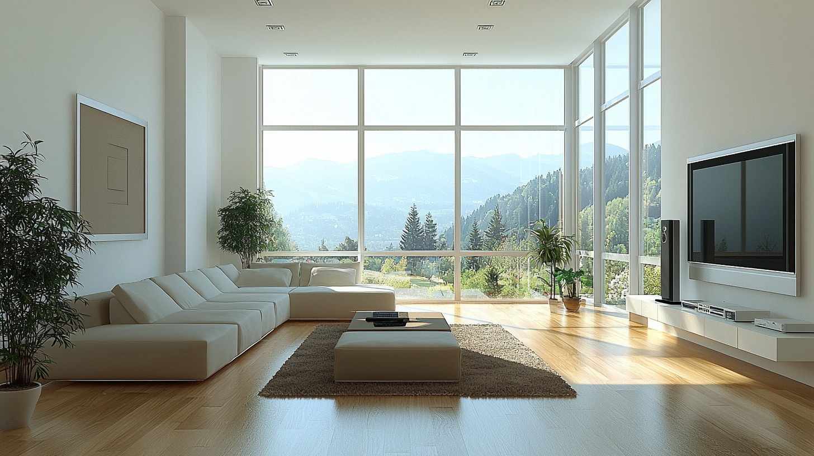
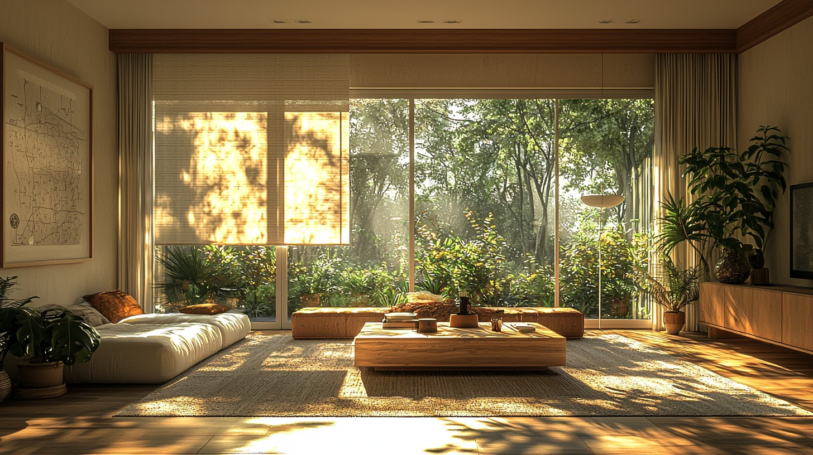
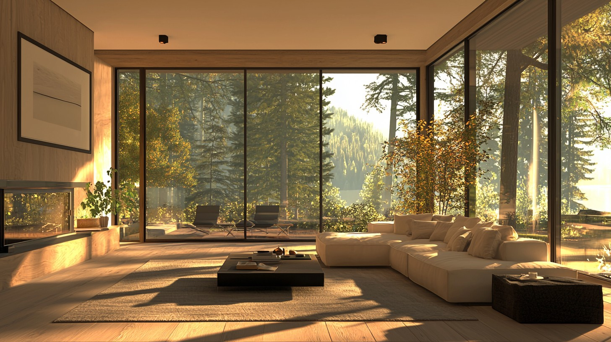

想和你聊聊家的感覺。家就像是一個能擁抱所有情緒的地方，不管外面多麼喧囂，回到家就能感受到那份寧靜。或許是廚房裡傳來的飯菜香氣，或者是客廳裡微微作響的老鐘聲，這些熟悉的聲音和氣味，總是讓人感到安心。
想像一下，當你輕輕推開房門，走進充滿光線的客廳，陽光靜靜地從窗戶灑落進來，暖暖的光束躺在地板上，彷彿在邀請你靠過來。白色的沙發上有幾個柔軟的抱枕，隨時等著你把身體陷入其中。這裡沒有繁雜的事，只有屬於你的小小世界。
咖啡桌上放著幾本書，還有一杯剛泡好的熱茶，茶香開始在空氣中蔓延，輕柔地撲面而來。你可以想像嗎，坐在這裡，靠著沙發，捧著熱茶，看著窗外的綠樹輕輕搖曳，那份安靜和美好，好像整個世界都只剩下你和這些細碎而動人的時光。
窗邊的植物長得茂盛，陽光透過窗簾，葉子被陽光染得閃亮，你似乎都能感覺到它們正悄悄在呼吸。那種生命的氣息，溫柔地流淌在整個房間裡，光影交織的瞬間，就像一幅自然畫作，一切都那麼的和諧，讓人片刻都不願離去。
大面積的玻璃窗為外面的世界展開雙手，你可以看到遠處的樹林，山脈，甚至還能聽到鳥兒的歌唱。此刻，無論是手捧一本書，或是端起一杯咖啡，只要無拘無束靜靜地和自己相伴，一切就都會慢下來，悄然無聲，只剩下心跳的節奏和那份寧靜的喜悅。
家應該就是這樣，不僅是一個居所，更是我們心靈的歸宿。在這樣的角落裡，我們可以把一切煩擾暫時放下，找到屬於自己的那份平靜和美好。這些簡單的小片刻，就像是耳邊的低語，輕聲告訴我們，生活始終是美好，它們一直藏在最平凡的日子裡。